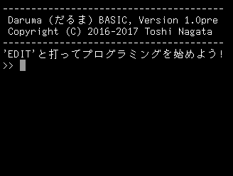

起動画面です。

キーボードで EDIT と打って ENTER キーを押すと、こんな画面になります。
プログラムを書いてみます。
I の値を 0 から 1000000 まで増やしながら繰り返す。I を 100000 で割った余りが０なら、I の値を表示する。
ESC キーを押すと編集モードから抜けます。そこで RUN と打つと、今のプログラムを実行できます。
実行するマシンによりますが、だいたい１秒ぐらいで終わるはずです。このような簡単な処理なら、１秒間に1000000回ほど繰り返し実行ができるわけです。
[ ← トップページへ ]